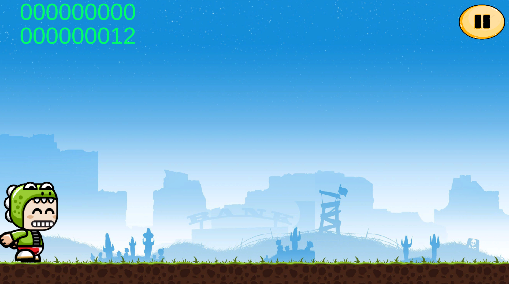
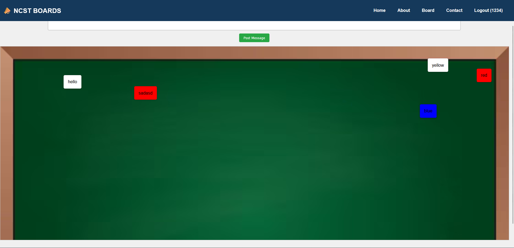

SERVICES

I have a basic understanding of C++ programming, capable of writing simple codes and continuously improving my skills. I am eager to enhance my problem-solving abilities and explore more advanced programming concepts.

I am familiar with C# programming and have applied it in game development. As part of a school project, I created a basic game using C# in Unity Engine, which helped me understand game mechanics, object-oriented programming, and scripting.

I can create basic web pages using HTML and have a fundamental understanding of structuring websites. While still developing my front-end skills, I ensure that my work adheres to proper web development standards.

I have a basic grasp of CSS for styling websites, though I acknowledge my creativity is still developing. However, I strictly follow design principles and best practices to ensure clean and functional web layouts.
I have basic knowledge of Unity Engine and have used it in a school game development tournament. I understand game development fundamentals, scripting, and mechanics, and I am eager to expand my expertise in game design and interactive experiences.

I am skilled in optimizing software performance, diagnosing issues, and troubleshooting errors to ensure efficient system operation. I focus on maintaining system stability and improving overall software functionality.

I have hands-on experience in building, maintaining, and optimizing computers. My expertise includes assembling PC components, troubleshooting hardware issues, upgrading systems, and ensuring peak performance for different computing needs.
PROJECTS
|  |
|---|
| Elf Scape (2024) - A game project for Programming Logic and Design. Developed using Unity and C#. It earned 1st Place in our school tournament. |
|  |
|---|
| Freedom Wall (May 2025) - A social media message board project for our Object Oriented Programming subject. Users can post messages publicly. |